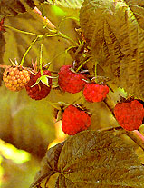

We are having a problem with the new shoots on our eight-year-old raspberry plants. They seem to be under attack by some sort of worm. Right now we are burning the tops of the plants away so that neighboring plants don't get infected. Is there anything else we can do to get rid of the problem, or do we have to get rid of the plants all together?
GEORGE
Rawdon, Quebec
Your berry plants are being attacked by cane borers - probably the larvae of the black and orange raspberry cane borer beetle or of the raspberry crown borer. Both species produce a single generation of offspring each year and have a two-year life cycle: eggs and larvae the first year, adult phase in the second. There is no way to get to larvae once they hatch inside a cane, so you're doing precisely the right thing: breaking off and burning borer-infected canes as soon as you notice damage. Keep it up for the next two years, even if your crop is severely diminished. Your eight-year old plants are close to the end of their ten-year prime.
We'd recommend that you use the established planting to get rid of the borer population and plant any new crops in another location - preferably on raised beds to guarantee good drainage and avoid root rot. You might want to get a copy of The Backyard Berry Book by Stella Otto a useful, hands-on book about growing small fruits in the home garden [$17.95, Chelsea Green, available for sale at Mother Earth Shopping]
|
 PHOTO: RICK WETHERBEE Delicious raspberry plants can quickly be destroyed by cane borers. |
|
|